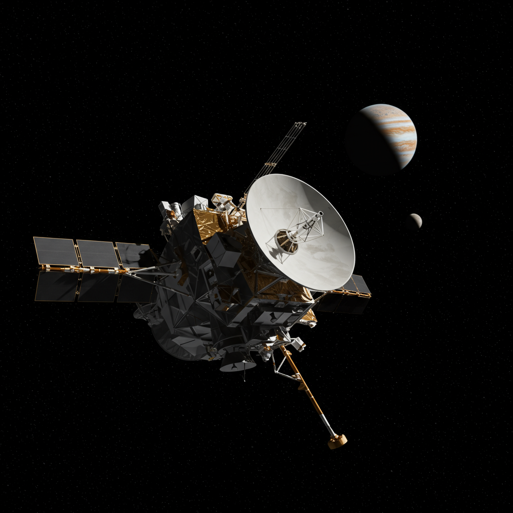
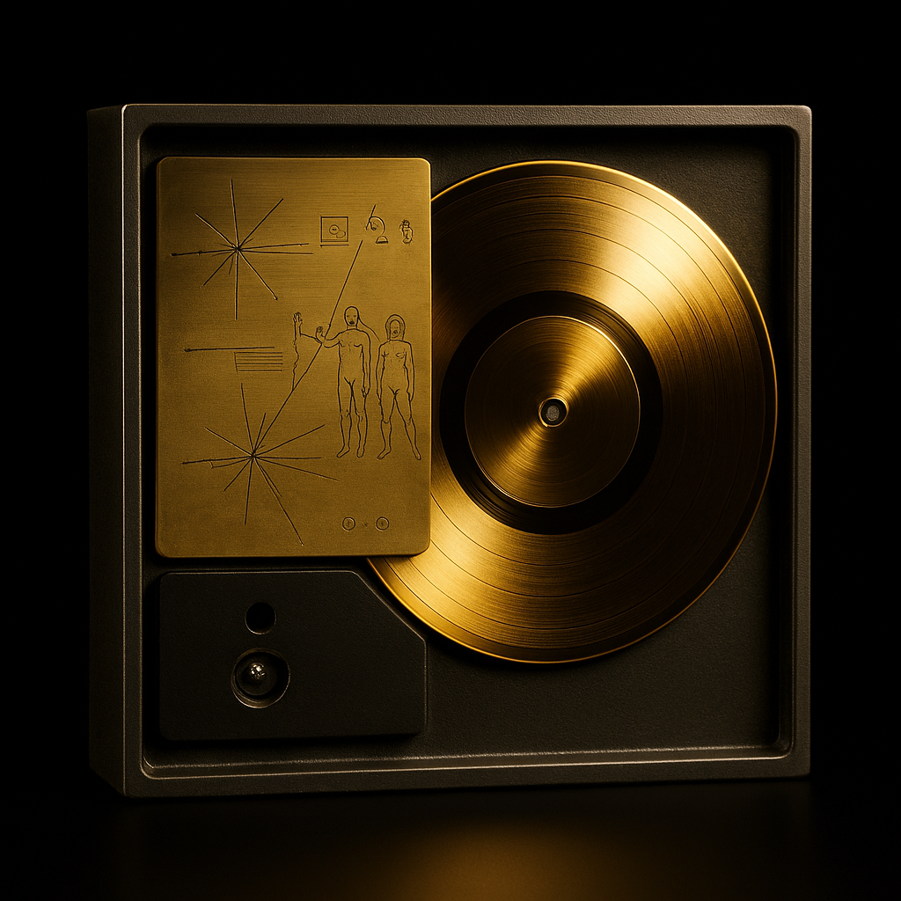

Voyager 1
Agencia: NASA
Fecha de lanzamiento: 5 de septiembre de 1977
Duración de la misión: En operación (más de 45 años)
Tipo de misión: Exploración planetaria y espacio interestelar
Objetivo: Estudiar los planetas exteriores del sistema solar, principalmente Júpiter y Saturno, y luego continuar hacia el medio interestelar.
Carga científica: Cámara de imágenes, espectrómetros, magnetómetro, detectores de plasma, rayos cósmicos, y más. Incluye el famoso Disco de Oro con sonidos e imágenes de la Tierra.
Impacto histórico
Voyager 1 fue la primera sonda en alcanzar el espacio interestelar, superando los límites del sistema solar en 2012. En 1990 tomó la famosa imagen conocida como “Pale Blue Dot”, mostrando la Tierra como un punto diminuto. Su legado es tanto científico como cultural, llevando el mensaje de la humanidad más lejos que cualquier otro objeto construido por el ser humano.
Mensaje interestelar
Voyager 1 lleva consigo el Disco de Oro, un mensaje interestelar elaborado por Carl Sagan y su equipo. Contiene saludos en 55 idiomas, sonidos naturales de la Tierra, música de distintas culturas y más de 100 imágenes representativas de la vida en nuestro planeta. El disco fue diseñado como una cápsula del tiempo, una muestra de lo que somos... por si alguien, algún día, lo encuentra.
